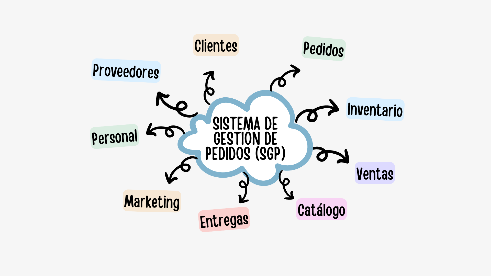

FloriSoft es un sistema propuesto para optimizar la gestión en el sector de las florerias, diseñado para administrar de manera eficiente las áreas del negocio: Clientes, Pedidos, Inventario, Ventas, Catálogo, Entregas, Marketing, Personal y Proveedores.
La problemática a resolver en la florería es la falta de organización en el proceso de gestión de pedidos, lo que dificulta el seguimiento adecuado de cotizaciones, pagos, entregas y datos de clientes, resultando en respuestas lentas a las solicitudes. Además, la ausencia de un control efectivo del inventario limita la capacidad de analizar la rentabilidad de los productos ofrecidos y dificulta la adaptación a las necesidades del mercado.
Sistematizar los procesos de gestión de pedidos, inventario y atención al cliente mediante el desarrollo de un sistema digital, con el fin de optimizar el seguimiento de cotizaciones, pagos y datos de clientes, facilitando la toma de decisiones informadas sobre el inventario y las estrategias de venta en la florería.
El sistema se fragmento empleando la estrategia de "divide y vencerás", que tiene como objetivo identificar unidades de desarrollo lo suficientemente claras para ser creadas de manera independiente, pero que a su vez se integren con facilidad en el sistema completo.
 |
|
||
| Aguilar Morales Adriana | Cruz Cruz Karina Gabriela | Estrada Zuñiga Ian Donovan | Paredes Cruz Jabneel |
| 22011008@itsoeh.edu.mx | 22011088@itsoeh.edu.mx | 22011147@itsoeh.edu.mx | 21011782@itsoeh.edu.mx |